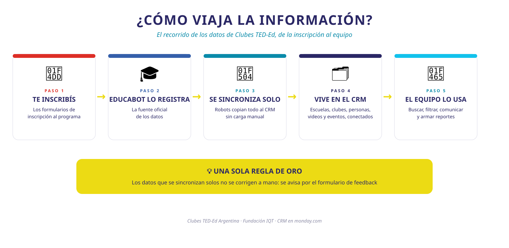

BIENVENIDO AL CRM DE CLUBES TED-ED
El recorrido de la reunión de lanzamiento, siempre disponible.
CONOCÉ NUESTRO NUEVO CRM
Un recorrido animado por el sistema que ordena toda la información del programa · Fundación IQT
UN SOLO LUGAR PARA TODA LA INFORMACIÓN
El CRM vive en monday.com y reúne instituciones, licencias, facilitadores, videos y eventos, sincronizado con Educabot.
¿CÓMO FLUYE LA INFORMACIÓN?
⚠️ Educabot manda: los campos sincronizados no se editan a mano.
🏠 HOME
La puerta de entrada: accesos directos a cada tabla, dashboards y todo lo que necesitás para arrancar el día.
📍 TABLA INSTITUCIONES
1.729 escuelas geocodificadas. Acá también repasamos los básicos de monday:
🧱 Tabla y columnas
Elementos, tipos de columnas y ficha.
🔎 Filtrar y buscar
Filtros, agrupar, ocultar, búsqueda.
👓 Vistas
Tabla principal y «2026 x Hub».
✉️ Comunicación
Emails, actividades y actualizaciones.
🔐 Permisos
Contenido sí; columnas solo admin.
🕓 Historial
Versiones y actividad: nada se pierde.
INSTITUCIONES: TU MAPA DEL PROGRAMA
Datos de cada escuela: ubicación, gestión, contactos.
Cortes por provincia, año, hub y tipo de gestión.
Historial de comunicación con los contactos.
Licencias y videos vinculados a la institución.
🎫 LICENCIAS · 🧑🏫 FACILITADORES ÚNICOS
🎫 Licencias
Un club por ciclo (2022–2026), vinculado a su institución y facilitadores. Con automatizaciones.
🧑🏫 Facilitadores únicos
Una fila por DNI. Un DNI puede tener varios idFac; cada inscripción es un subitem.
Las vinculaciones te dejan saltar de una licencia a su escuela y sus facilitadores con un clic.
🎬 VIDEOS · 🗓️ EVENTOS · ✅ ASISTENCIAS
🎬 Videos de YouTube
Las charlas de los clubes, vinculadas a institución y ciclo.
🗓️ Eventos y capacitaciones
Encuentros y formaciones con su ficha completa.
✅ Asistencias
Quién participó de qué, conectado a personas y escuelas.
Misma lógica en todas: columnas, vinculaciones, ficha y automatizaciones.
📊 REPORTES · 📖 DICCIONARIO · 🛡️ GOBERNANZA
📊 Reportes
Dashboards con los números del programa.
📖 Diccionario
Todas las tablas y columnas con sus reglas de datos. Tu referencia ante dudas.
🛡️ Gobernanza
Matriz RACI, documentación y credenciales nonprofits.
EL CRM RECIÉN EMPIEZA
Más Canva, Claude y Make para nonprofits conectados a monday: bases estandarizadas y una nueva forma de trabajar.
TU FEEDBACK CONSTRUYE EL SISTEMA
Entrá con tus credenciales e integrá tu email.
Completá el formulario de feedback: recibís respuesta.
Votá o comentá lo ya propuesto en la tabla de feedback.
Dos semanas de preguntas y mejoras rápidas.
Próxima reunión: semana del 10/8/26.
IDEAS QUE
TRANSFORMAN
Clubes TED-Ed Argentina · Fundación IQT
Un CRM hecho entre todos.
Barra de espacio: pausa · Flechas ← →: cambiar escena
¿QUÉ ES LA TABLA INSTITUCIONES?
Es el corazón del CRM: 1.729 escuelas con clubes activos, geocodificadas y organizadas por provincia, hub, año y tipo de gestión.
Cada fila es un elemento (una institución) y cada columna guarda un tipo de dato: texto, estado, ubicación, personas, vínculos.
Entrá a monday con tus credenciales y abrí la tabla Instituciones desde el Home del CRM.
Si es tu primera vez, integrá tu email desde tu perfil para que tus comunicaciones queden registradas.
LA FICHA DE UN ELEMENTO
Al hacer clic en el nombre de una institución se abre su ficha: datos, actualizaciones, emails y actividades, y sus vínculos con Licencias y Videos.
Abrí la ficha de cualquier institución y recorré: Actualizaciones, Emails y Actividades y Registro de actividad.
El historial de versiones guarda todo: si algo se cambió por error, se puede recuperar.
FILTRAR, AGRUPAR, OCULTAR Y BUSCAR
Arriba de la tabla tenés las herramientas para ver solo lo que necesitás. Marcá cada una a medida que la pruebes:
LAS VISTAS
Una vista es una configuración guardada de filtros, agrupamientos y columnas. Hay Tabla Principal y 2026 x Hub, y se pueden crear más.
Cambiá entre «Tabla Principal» y «2026 x Hub» y notá la diferencia.
Modificar una vista compartida la cambia para todos. Para experimentar, creá tu propia vista con tu nombre.
PERMISOS: QUÉ PODÉS TOCAR Y QUÉ NO
Todos pueden ver, agregar y modificar elementos, fichas y vistas. Reservado a admin:
Educabot es la fuente de verdad: un dato sincronizado mal no se corrige a mano — se reporta por el formulario de feedback.
PONÉ A PRUEBA LO APRENDIDO
Ante dudas, consultá el Diccionario o el formulario de feedback.
¿QUÉ ES UNA LICENCIA?
Cada fila es un club en un ciclo académico. Hay 6.142 licencias entre 2022 y 2026.
El nombre del elemento es el ID de Educabot: es la clave de sincronización y no se edita.
Abrí la tabla Licencias y ordená por ciclo académico para ver la evolución del programa.
COLUMNAS Y VINCULACIONES
Cada licencia tiene dos vínculos clave:
Desde una licencia, hacé clic en la institución vinculada: saltás directo a su ficha.
Los vínculos son bidireccionales: desde la institución también ves todas sus licencias.
¿QUÉ DATOS ENCUENTRO ACÁ?
¿Cuántos clubes tuvo una escuela desde 2022? Abrí la ficha de la institución y contá sus licencias vinculadas.
AUTOMATIZACIONES Y SINCRO
La tabla se actualiza sola: el flujo F2 de Make sincroniza desde Educabot. Las automatizaciones de monday avisan cambios de estado.
No edites el nombre del elemento (ID Educabot) ni los campos de sincronización: unen el CRM con Educabot.
REPASO RÁPIDO
Seguí con Facilitadores Únicos.
EL TABLERO MAESTRO DE PERSONAS
4.646 personas: una fila por DNI. Es el maestro de todas las personas que facilitaron clubes.
Ojo: el idFac no es único por persona. Una misma persona puede tener varios idFac, uno por ciclo. Todos se acumulan en su fila.
Buscá un facilitador por nombre o DNI y abrí su ficha.
LOS SUBITEMS: UNA INSCRIPCIÓN POR LICENCIA
Dentro de cada persona hay subitems: cada uno es una inscripción a una licencia. La historia completa vive en un solo lugar.
Expandí los subitems de un facilitador con varios ciclos y mirá sus inscripciones año a año.
¿Un facilitador aparece dos veces? Probablemente sea un DNI mal cargado — reportalo por el formulario.
VINCULACIONES
Para contactar a los activos de un hub: filtrá por ciclo 2026 y hub.
SINCRO Y CUIDADO DE LOS DATOS
El flujo F3 de Make alimenta este tablero desde Educabot: crea inscripciones, actualiza el maestro y genera los subitems.
idFac y DNI son claves de matching. Un dato de identidad mal no se edita: se reporta para corregirlo en la fuente.
REPASO RÁPIDO
Último paso: aprendé a dar feedback.
UN SOLO CANAL: EL FORMULARIO
Todas las consultas, ideas y reportes de errores entran por el formulario de feedback. Nada se pierde en chats o mails sueltos.
Guardá el link del formulario en favoritos: wkf.ms/4yN733O (entrá con tu usuario de monday). Al enviarlo, recibís confirmación y respuesta.
¿Qué tipo de feedback podés mandar?
¿Dato raro (duplicado, campo mal sincronizado)? También va por el formulario — no lo corrijas a mano si es de sync.
LA TABLA DE FEEDBACK: VOTÁ Y COMENTÁ
Todo lo enviado cae en una tabla de feedback visible para el equipo. Antes de proponer algo, revisá si alguien ya lo pidió: podés votarlo o comentarlo.
Entrá a la tabla de feedback, buscá una propuesta que te interese y dejá tu voto o comentario.
LOS PLAZOS
¿Querés relevar algo que hoy no está en el sistema? Proponelo por el formulario y lo definimos entre todos.
REPASO RÁPIDO
Ya estás en condiciones de usar el CRM. Nos vemos la semana del 10/8.
OBJETIVOS DE HOY
AGENDA
👋 Bienvenida y check-in
5 min🗺️ Arquitectura del sistema: Educabot, sincro, tablas core, Make y flujos
15 min🧭 Recorrido · parte 1: Home + Instituciones con los básicos de monday
30 minBreak — pausa para café y preguntas sueltas
10 min🎫 Recorrido · parte 2: Licencias + Facilitadores Únicos
20 min🎬 Recorrido · parte 3: Videos, Eventos y Asistencias
15 min📊 Reportes, Diccionario y Gobernanza
12 min✨ ¿Qué más podemos hacer? formularios, mails, proyectos
10 min🚀 Proyecto, feedback y próximos pasos
15 minDESPUÉS DE HOY
Formulario de feedback: wkf.ms/4yN733O (con tu usuario de monday). Tipos: preguntas de funcionamiento, errores o datos faltantes, pedidos de datos/reportes, widgets para la Home, automatizaciones, nuevas funciones y parking de ideas.
Dos semanas de ventana para preguntas y mejoras rápidas por el formulario de feedback — recibís confirmación y respuesta.
Tabla de feedback: mirá lo que ya se propuso, votalo o comentalo.
Próxima reunión: semana del 10/8/26.
LA VERSIÓN SIMPLE — ¿CÓMO VIAJA LA INFORMACIÓN?

{kind=link}
EL CAMINO DEL DATO
🎓 Educabot
Fuente de verdad: altas y ediciones del programa.
📥 Carga Inicial
Staging: instituciones, licencias (slots facilitador 1-10), facilitadores y videos.
⚙️ Make F1–F8
Upsert automático con gateways: «¿institución nueva?» SÍ → crear + geocodificar · NO → actualizar.
🗂️ Índices CRM
Las tablas core del workspace, vinculadas entre sí.
✉️ Comunicación
Mail de seguimiento + Calendar de Clubes (eventos).
LAS TABLAS DEL CRM
📍 Instituciones
Escuelas geocodificadas, con mapa.
🎫 Licencias
Un club por ciclo, 2022–2026.
👤 ID Facilitadores x Ciclo
Índice: una fila por idFac.
🧑🏫 Facilitadores Únicos
Una fila por DNI · 10.422 subitems (inscripciones).
🎬 Videos YouTube
Charlas de los clubes.
🗓️ Eventos y Capacitaciones
Encuentros y formaciones.
✅ Asistencias
Participación por persona y evento.
LOS 8 FLUJOS DE MAKE
Instituciones → índice. Upsert con gateway «¿institución nueva?»: crea con geocodificación o actualiza.
ActivoLicencias → índice. Upsert por ID de Educabot.
ActivoFacilitadores x Ciclo. Routers A/B/C: upsert por idFac y por DNI contra el índice y el maestro.
Activo · con erroresVideos YouTube → índice.
InactivoConectar Licencia ⇄ Institución. Completa la vinculación entre tablas.
InactivoMaestro + subitems. Crea una inscripción (subitem) por licencia y asigna el rol Referente / Co-Facilitador.
ActivoConectar Video ⇄ Licencia.
InactivoSweep diario 07:30. Repara conexiones pendientes vía GraphQL.
InactivoLos estados y errores en tiempo real están en el doc «🗺️ Arquitectura CRM» del Home del workspace en monday.
INTEGRACIONES
Mail del CRM. Convocatorias, onboarding y seguimiento a facilitadores, integrado a monday (Gmail).
Calendar de Clubes. Agenda de eventos y capacitaciones (GMT-3), conectada a la tabla Eventos.